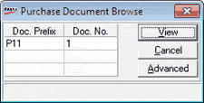
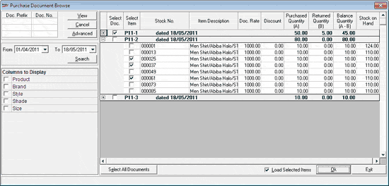

The Purchase Document Browse window allows you to select the items to be returned, or the list of documents from which the items are to be returned.

You may enter the Doc. Prefixes and Doc. Nos. or use the Advanced option to select the document details.
View: To view the details of documents if Doc. Prefixes and Doc. Nos. are specified. On clicking View, the Purchase Document Browse window changes as shown below.
Cancel: To close the window without selecting the documents from which items are to be returned.
Advanced: To specify the period in which the purchase documents were generated and display the corresponding list of documents. On clicking Advanced, the Purchase Document Browse window changes to accept From and To dates. By default Shoper date is filled in both.
Enter the From and To dates to specify the purchase document generation period, and click Search. The Purchase Document Browse window changes as shown below.

Columns to Display: Select the required optional columns to be displayed in the document details grid.
Select the checkbox under Select Doc. to select the purchase document.
In case you need to select a few items from the purchase document, click the + sign on the left of the corresponding document. All items in the document are listed. Select the checkbox under Select Item to specify the required items in the purchase document.
Note: The column Stock on Hand in the grid shows the current available quantity. This is not directly related to the quantity in the purchase document.
Select All Documents: Click to consider all the listed purchase documents for reference. Items for purchase return can be selected from any or all of these documents. You may deselect a few documents by deselecting the corresponding Select Doc. checkbox.
On clicking Select All Documents, the button changes to Unselect All Documents, enabling cancellation of document selection in one click.
Load Selected Items: By default, this is selected indicating that all selected items shown in the grid will be loaded. Deselect, if you want to scan stock numbers against the selected purchase documents.